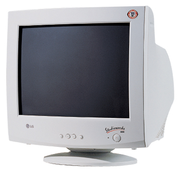
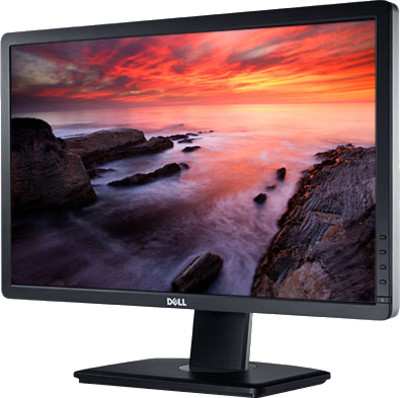
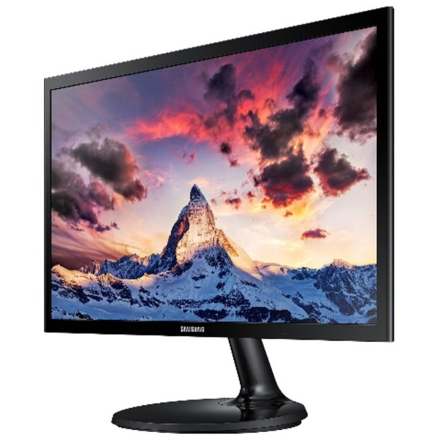
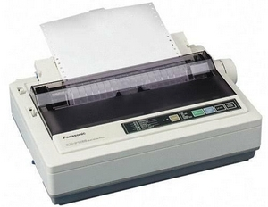
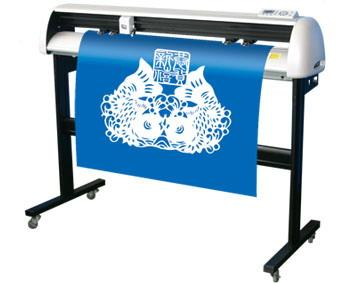
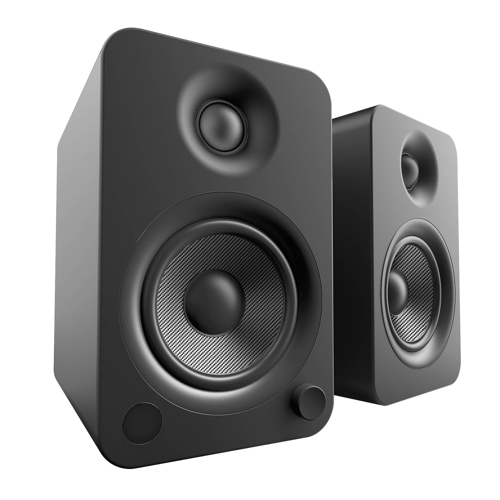
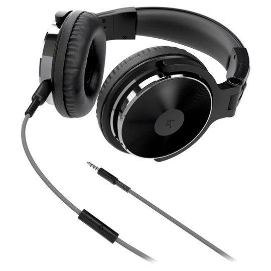

| Output device |
Advantage |
Disadvantage |
Image |
CRT Monitor
(Cathode-ray tube)Presents text and graphics visually using a cathode ray tube. They are not used as they have been replaced.
CRT's are still used in design industry because they are really bright.
|
Bright clear display.Low initial cost.Can display text, graphics, photos and videos.Reading docs on screen saves paper.A wide viewing angle. |
Large and heavy.Being replaced by TFT screen.Unsuitable for those with visual disabilities.Use lots of power, increasing running costs. |
 |
LCD Monitor
(Liquid Crystal Display) Used in home and office computing and gradually replacing CRT monitors. |
Lighter and thinner than CRT monitors and becoming cheaper.Uses very little power - low running costs.Modern screens can also incorperate touch technology.Can be wall mounted. |
Early models had a limited viewing angle and could blur when showing fast-moving images. |
 |
LED Monitor
(Light-emitting diode)Used in home and office computing and gradually replacing LCD monitors. |
Lighter and thinner than LCD monitors.Uses very little power - low running costs.Modern screens can also incorperate touch technology.Can be wall mounted.A wide viewing angle and its colors are more accurate. |
|
 |
Multimedia projector
Can be connected to a computer, television or media player to present to a large audience. Used in schools, universities and business conferences. |
Portable.Able to produce larger display than monitors. |
Although portable - still requires an external power source.Requires a darkened room to produce bright images.Space is needed to project upon and for the projector to be positioned at a suitable distance.Lamps are very expensive to replace. |
 |
Laser printer
Used in organisations to print text, graphics and photos quickly and with high quality.
Ideal for colour reports, newsletters and posters. |
Prints high quality images very quickly.Toner cartridges are designed to print thousands of pages.Very little noise compared to others printers.No danger of spillages due to powder-based cartridges. |
Both printers and cartridges are more expensive than inkjet printer.Without regular servicing and good ventilation, ozone emissions can reach dangerous levels. |
 |
Inkjet printer
Often used at home to print high quality text, graphics and photos. Used to print digital photography and small documents (few pages). |
Printers and cartridges are cheap to purchase and for light or medium use.Modern printers often include built-in scanners and card readers.Capable of photo-quality images and high-quality graphics. |
Ink costs can be expensive for printing large numbers of pages.Slower than laser printers.Ink cartridges run out quickly.Only really suitable for home or small office use.Output quality depends on the type of paper used. |
 |
Dot matrix printer
Uses a printer head and ribbon to generate characters on continuous stationary.
Still used in industry to print payslips, labels and invoices. |
Ideal for repetative printing tasks, where speed, noise or quality is not a issue.Running costs ae very low.Hard-wearing: suitable for factory (dusty and hot/cold) environments.Suitable for use with NCR or carbonless paper to create two copies of the same document without reprinting. |
Noisy and slow to print.Limited graphics resolution and colour options compared to inkjet or laser printer.More prone to jamming than other printers due to feed mechanism.expensive to buy. |
 |
Graph Plotter
A large format printer that mechanically controls pens to create line drawings.
Used primarily in CAD to prnt off large designs. |
Can produce printouts for larger than those that standard printers can make.Drawing can be produced to an exact scale. |
Limited to colours pen choices.Unable to create photographs or full colour graphic images.Larger-scale inkjet printers often replacing this type of printer. |
 |
Powered speakers
Are loudspeakers that have built-in amplifiers.
|
Produce loud sound.More than one can hear its sound. |
Could be annoying for the people around. |
 |
Headphones
Traditionally refer to a pair of small loudspeaker drivers worn on or around the head over a user's ears.
They are electroacoustic transducers, which convert an electrical signal to a corresponding sound. |
Let a single user listen to an audio source privately.audio sound levels are more accurate than the loudspeakers.Can provide some additional features that can be beneficial for gamers. |
only one can listen to its sound. |
 |